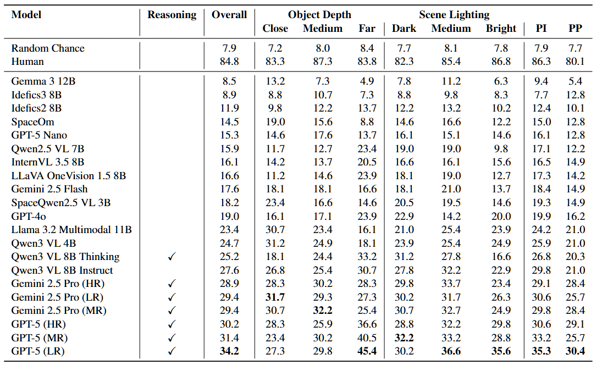
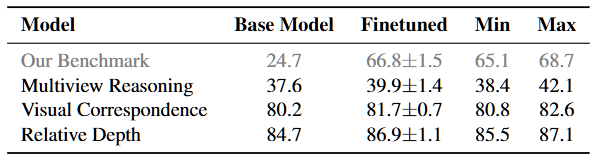

Which object is spatially inconsistent between the two frames? The two views depict the same static scene, but one object in the second image has an appearance copied from a different camera pose, making it 3D-inconsistent with the first view. Humans easily identify the inconsistent object, whereas current multimodal language models (MLLMs) frequently cannot. See the paper for the correct answer.
How it works
We introduce the concept of spatial inconsistencies. A model that understands the 3D world should be able to go beyond describing it and identify when its fundamental rules are violated. We also design a simple cut-and-paste approach to synthesize these inconsistencies and evaluate several SOTA MLLMs, which fail to spot the inconsistencies.
Given three views $(V_1,V_2,V_3)$ of the same static scene, we (1) select an object $O$ visible in all views, (2) Erase $O$ in view $V_2$ and inpaint to obtain a clean background, and (3) paste the instance of $O$ from view $V_3$ back into $V_2$ at its original footprint. Because $V_3$ is captured from a different camera pose, the pasted object has an appearance that is incompatible with the 3D geometry implied by $V_1 \rightarrow V_2$, while all other objects remain consistent. This yields realistic image pairs with controlled spatial violations and no manual annotation. We label objects in $V_1$ for our forced-choice evaluation.

Results
We evaluate both humans and MLLMs in our forced-choice evaluation. MLLMs do far worse than humans, which solve the task with relative ease. See the paper for more details.

We also can scale our inconsistency generation method into training data. When we finetune Qwen3-VL-4B to spot inconsistencies, we observe zero-shot increases in 3D perception tasks such as relative camera motion estimation, multiview correspondence, and relative depth estimation. This suggests that learning to spot inconsistences can not only be used as evaluation, but also as a proxy task for multimodal 3D perception.
